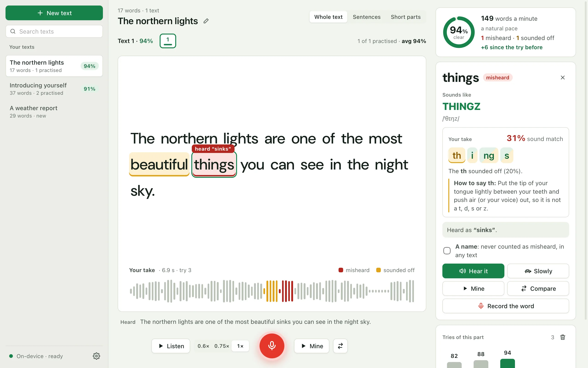

Say it heard “write”right.
Paste anything you need to say out loud. Parrot reads it to you, listens to you read it, and shows exactly which words came out wrong, and how they should sound.

A verdict for every word you say.
Whisper writes down what it heard without knowing your text, and a second check scores how each sound matched. Together they find the words a listener would trip over.
- Red when it was heard as another word, with what was heard
- Amber when it was close, but not quite
- The same stretch marked on the waveform of your take

Hear how it should sound.
Click any word: see it spelled the way it sounds, with the stressed syllable in capitals and its IPA, then hear it alone, slowly, or right after your own.
- About 135,000 words from the CMU Pronouncing Dictionary
- Your word cut out of your take, then the correct one
- Each sound of your word marked, with a tip for the weakest
- Record just that word, as often as you like

Anything you need to say out loud.
An interview answer, a talk, a wedding toast. Paste it once and practise it whole, sentence by sentence, or in short parts cut at commas.
- Your texts are kept, with where you left off
- Read to you at the speed you choose, each word lit as it's spoken

Your voice never leaves your computer.
Speech recognition runs on your own machine with Whisper, offline once its model is downloaded. Nothing to sign up for, nothing sent anywhere. (Pick a system voice marked “online” and it sends the text it reads, never your recordings, to its provider. “Check for updates” in Settings asks GitHub for the latest version, only when you click it.)
Free for every desktop.
The speech models (about 800 MB) download the first time you open Parrot. After that it works offline.
macOSyour system
macOS 11 Big Sur or later (Intel: 13.4 or later) Apple Chip · .dmg Intel Chip · .dmgThe first time you open it
The installers aren't signed with paid developer certificates yet, so your system asks once.
- macOS: if it says Apple could not verify Parrot, right-click the app and choose Open. On macOS 15 and later, go to System Settings → Privacy & Security and click Open Anyway.
- Windows: if SmartScreen says it protected your PC, click More info, then Run anyway.
All releases and source code are on GitHub.